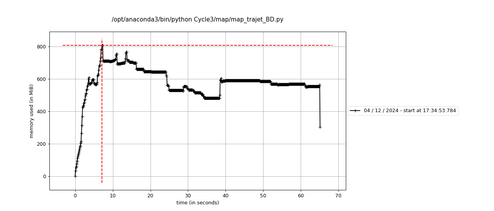
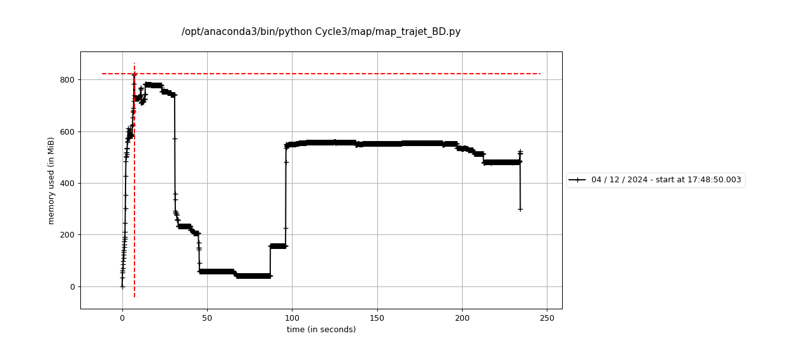
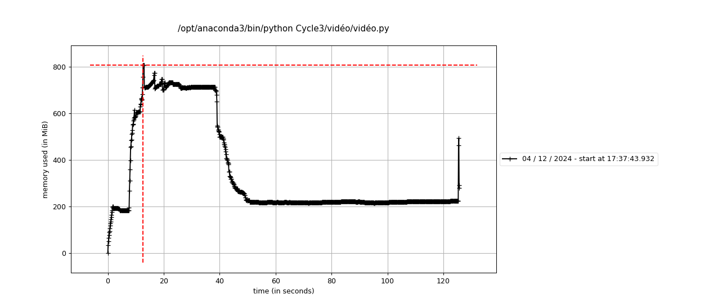
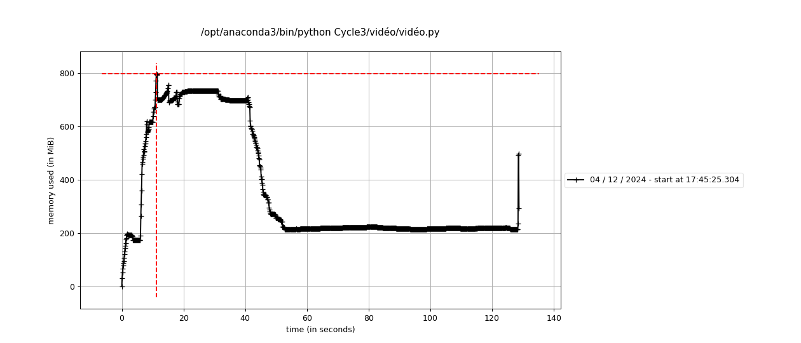
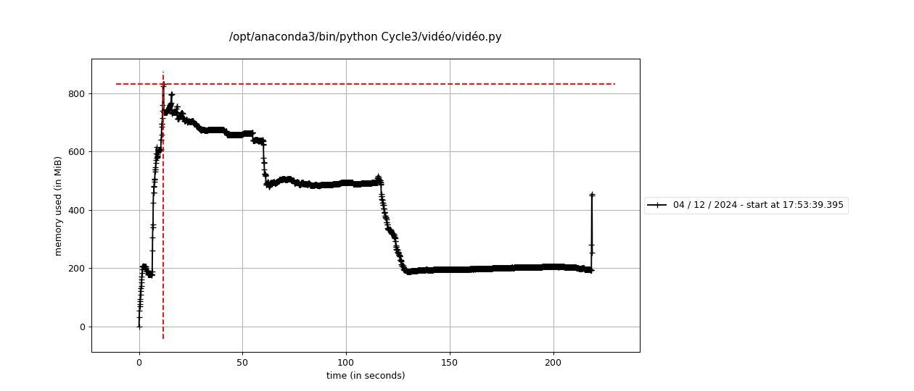
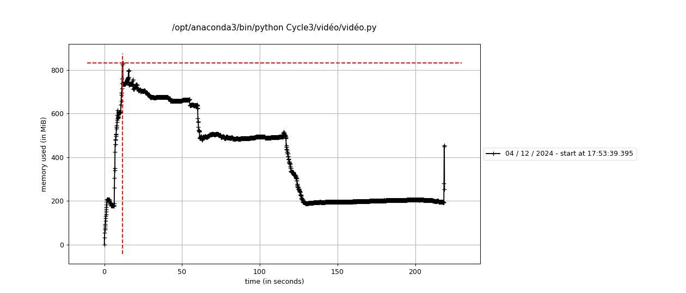

Documentation
1. Introduction
Le projet CycleVision3 a pour objectif d’analyser et de prédire les flux cyclistes dans la ville de Montpellier à l’aide de données issues de trois sources principales :
- VéloMagg : Historique des trajets réalisés avec le système de vélos en libre-service.
- Capteurs de flux cyclistes et piétons : Données collectées à partir de dispositifs installés aux points stratégiques de la ville.
- OpenStreetMap (OSM) : Données géographiques ouvertes, utilisées pour la cartographie et la contextualisation des trajets.
L’ambition du projet est de développer des visualisations interactives, notamment une carte prédictive des flux cyclistes, accessibles via un site web dédié. Ces outils visent à :
- Identifier les tendances de mobilité pour mieux comprendre les habitudes des usagers.
- Proposer des solutions pratiques afin d’optimiser les infrastructures urbaines et de promouvoir l’usage du vélo comme moyen de transport durable.
En combinant innovation technologique et impact sociétal, CycleVision3 s’inscrit dans une démarche adaptable à d’autres contextes urbains. Ce projet contribue ainsi à la réflexion autour de la mobilité intelligente et durable, répondant aux enjeux croissants des villes contemporaines.
2. Project Setup
2.1 Structure du projet [WILL BE FINISHED AT THE END]
La structure du projet est conçue pour garantir une séparation claire des composantes essentielles à l’analyse et à la création des visualisations. Voici un aperçu de l’organisation des fichiers et répertoires :
Voir la structure
main/ # Répertoire principal du projet
├── .github/workflows/ # Configuration pour l'intégration continue
├── analyse_donnee/ # Scripts pour l'analyse des données
├── cache/ # Fichiers temporaires
├── data/ # Données des 3 jeux de données
│ ├── extracted/ # Données extraites
│ ├── CoursesVelomagg.csv # Données des trajets VéloMagg
│ ├── video.csv # Données vidéo brutes
│ └── video_avec_coord.csv # Données vidéo enrichies avec coordonnées
├── docs/ # Répertoire des fichiers du site web
│ ├── .gitignore # Liste des fichiers à ignorer par Git
│ ├── #
│ ├── #
│ ├── #
│ └── styles.css # Fichier CSS pour la mise en forme du site
├── images/ # Images utilisées dans le projet
├── map/ # Scripts pour les cartes interactives
├── roadmap/ # Fichier README.md avec la description .......
├── slide/ #
├── src/ # Répertoire contenant le code source
│ ├── __init__.py # Initialisation du package
│ ├── donnée.py # Fonctions de traitement des données
│ └── fonctions_basedonnees.py # Fonctions pour les bases de données
├── vidéo/ #
├── visualisation/ # Résultats des visualisations
├──.DS_Store #
├──
├──
├── .Rhistory # Fichier d'historique R
├── .gitignore # Fichier Git ignore
├── README.md # Documentation principale du projet
└── requirements.txt # Dépendances du projet2.2 Installation et dépendances
Avant de commencer le développement et l’analyse des données, il est nécessaire de configurer l’environnement de travail en installant toutes les dépendances nécessaires. Voici les étapes à suivre pour préparer le projet :
Étapes de Préparation :
Cloner le Dépôt Git :
Téléchargez le projet en exécutant :git clone https://github.com/mscaia/PROJ_HAX712X.gitInstaller les Dépendances :
Installez les bibliothèques nécessaires :pip install -r requirements.txtPrévisualiser le Site Web :
Vérifiez l’environnement en lançant le serveur Quarto :quarto preview
2.3 Configuration des fichiers [Sphinx - CHEKED]
Le projet est configuré de manière à utiliser Quarto pour la création du site web interactif et [Sphinx pour la documentation générée automatiquement]. Le fichier _quarto.yml contient les paramètres de configuration du projet Quarto, tandis que le fichier index.qmd contient le contenu principal de la page d’accueil du site.
2.4 Base de données et traitement des données [SHOULD BE RECHEKED AFTER]
Les principaux jeux de données sont stockés dans le répertoire data/ et comprennent :
- CoursesVelomagg.csv : Historique des trajets en vélos libres.
- video.csv et video_avec_coord.csv : Données vidéo pour l’analyse spatiale.
Les scripts situés dans src/ effectuent :
- Le nettoyage des données.
- La conversion des formats pour l’analyse.
2.5 Exécution du projet
L’exécution du projet génère des visualisations interactives et des cartes prédictives grâce à :
- Folium : Création de cartes interactives.
- Matplotlib : Graphiques statistiques.
Les résultats sont stockés dans visualisation/ et incluent des cartes des trajets et des prévisions de trafic.
2.6 Documentation et tests [FINISH AND RECHECKED]
Pour garantir la qualité du code, le projet intègre :
- Tests Unitaires : Vérification des fonctionnalités principales.
- Documentation Technique : Générée avec Sphinx et Quarto pour détailler les API, les méthodes et les résultats.
3. Description des Données [RECHECK ABOUT THE DATASETS WITH TEAM]
L’analyse repose sur l’exploitation de trois ensembles de données principaux, chacun jouant un rôle clé dans l’étude des trajets cyclistes à Montpellier :
Données des trajets en vélos en libre-service (VéloMagg) : Ces données fournissent des informations détaillées sur l’utilisation des vélos en libre-service dans la métropole de Montpellier. Elles constituent une base essentielle pour analyser les tendances et les flux de déplacements cyclistes.
Source: Trajets à vélos en libre-serviceDonnées de comptage cycliste et piéton : Ces données, collectées par des capteurs placés à divers emplacements stratégiques, permettent de mesurer les flux de cyclistes et de piétons dans la ville. Elles enrichissent l’analyse en fournissant une perspective quantitative sur la fréquentation des infrastructures.
Source: Comptages vélo et piéton issus des compteurs de véloDonnées géographiques OpenStreetMap (OSM) : Ces données géographiques offrent une cartographie précise des rues, pistes cyclables et points d’intérêt de la ville. Elles sont cruciales pour la visualisation et la spatialisation des trajets étudiés.
Source: OpenStreetMap
Ces trois ensembles de données, complémentaires par nature, permettent une analyse approfondie et multidimensionnelle du trafic cycliste à Montpellier.
4. Workflow du Projet
4.1 Prétraitement et Nettoyage des Données
Étapes réalisées :
Le nettoyage et le prétraitement des données ont constitué une étape fondamentale pour assurer la qualité et la cohérence des données utilisées dans l’analyse. Les principales actions entreprises sont les suivantes :
- Validation des données : Identification et traitement des anomalies, telles que les valeurs aberrantes et les doublons, avec une gestion des valeurs manquantes en fonction de leur impact sur l’analyse.
- Formatage temporel et géographique : Conversion des champs de dates pour permettre une analyse chronologique, et standardisation des adresses et coordonnées géographiques pour optimiser la géolocalisation.
Cette phase a permis de préparer des données propres et fiables, essentielles pour l’analyse et la création des visualisations.
4.2 Visualisation et Cartographie du Trafic
Étapes réalisées :
Les données traitées ont été intégrées dans des visualisations interactives et des cartes dynamiques pour illustrer le trafic cycliste à Montpellier. Les actions clés incluent :
- Création de cartes interactives : Utilisation de la bibliothèque
Foliumpour développer une carte dynamique présentant les stations de vélos, les itinéraires fréquentés, et les zones de densité de trafic. - Calcul des itinéraires : Emploi de la bibliothèque
OSMnxpour déterminer les itinéraires entre les stations, mettant en évidence les parcours les plus utilisés et permettant l’analyse des variations temporelles du trafic.
Ces visualisations ont été des outils essentiels pour la compréhension des tendances du trafic cycliste, facilitant l’analyse et la prise de décisions éclairées pour les phases suivantes du projet.
4.3 Développement de l’Interface Web
Le projet s’est concrétisé par la création d’un site web interactif développé avec Quarto, intégrant :
- Les visualisations interactives produites lors de l’analyse.
- Une carte prédictive du trafic cycliste, permettant d’estimer les flux de vélos pour le lendemain en fonction des données historiques.
Cette interface a été conçue pour offrir une navigation fluide et intuitive, rendant les résultats accessibles aux utilisateurs de vélos. Elle constitue un outil complet pour l’analyse des données et la planification urbaine, tout en favorisant la promotion de la mobilité durable.
5. Pipeline de Traitement des Données
Le traitement des données est un élément central du projet CycleVision3, transformant les données brutes en informations exploitables pour l’analyse et la modélisation du trafic cycliste. La méthodologie adoptée repose sur une structure modulaire, garantissant flexibilité et robustesse. Les étapes principales du pipeline sont détaillées ci-dessous :
5.1 Acquisition des données
Les ensembles de données ont été obtenus à partir de sources officielles :
- Données VéloMagg : Historique des trajets réalisés via le système de vélos en libre-service.
- Comptages cyclistes et piétons : Données de comptage obtenues par des capteurs installés à des points stratégiques de la ville.
- Données OpenStreetMap (OSM) : Informations géographiques utilisées pour la cartographie des trajets.
Les fichiers ont été extraits sous les formats .csv et .json et chargés à l’aide de la bibliothèque pandas. Une validation initiale a été réalisée pour vérifier l’intégrité des fichiers (taille, colonnes attendues, etc.).
5.2 Prétraitement
L’étape de prétraitement vise à rendre les données prêtes pour l’analyse. Les principales opérations incluent :
- Nettoyage des données : Suppression des valeurs manquantes et des doublons afin de garantir la cohérence des données.
- Transformation des variables : Normalisation des données temporelles pour assurer une harmonisation des différents jeux de données.
Ces étapes ont permis de préparer un jeu de données fiable pour l’analyse et la modélisation.
5.3 Analyse exploratoire
Une analyse préliminaire des données a permis de dégager plusieurs tendances importantes :
- Analyse temporelle des flux : Identification des variations du trafic cycliste selon l’heure, le jour et le mois.
- Cartographie du trafic : Création de cartes interactives avec
Foliumpour visualiser les zones de forte densité de trafic. - Visualisation des variations de trafic : Observation des fluctuations de la densité du trafic à travers la ville.
Cette analyse exploratoire a guidé les choix méthodologiques pour les étapes suivantes, notamment la modélisation du trafic.
5.4 Modélisation
Un algorithme de prédiction du trafic cycliste a été conçu en prenant en compte plusieurs variables clés :
- Données historiques des trajets : Utilisation des trajets passés pour identifier des tendances.
- Localisation et fréquence des trajets : Analyse des points de départ et d’arrivée, ainsi que des fréquences de passage.
Le modèle repose sur l’analyse des données disponibles pour estimer les flux futurs de trafic, en se basant sur les tendances observées dans les trajets passés et leur répartition géographique.
5.5 Visualisation
Les résultats du projet sont présentés à travers diverses visualisations interactives, permettant une exploration approfondie des données :
- Cartes des trajets : Visualisation des trajets réalisés par les cyclistes, avec une mise en évidence des zones de forte densité de trafic.
- Cartes prédictives : Représentation des trajectoires prévues pour le trafic cycliste basé sur les données historiques.
- Carte des stations de vélos de Montpellier : Localisation des stations de vélos en libre-service à travers la ville, permettant une meilleure compréhension des points d’accès aux vélos.
- Visualisation vidéo : Une vidéo illustrant l’évolution du trafic cycliste sur une journée complète, générée à partir des données du projet.
Toutes ces visualisations sont accessibles directement via le site web interactif du projet, offrant ainsi une interface intuitive pour l’exploration des flux cyclistes et des prédictions.
5.6 Intégration
Le pipeline a été conçu pour être flexible et évolutif afin de répondre aux besoins futurs du projet :
- Portabilité : Le système peut être facilement adapté à d’autres villes disposant de systèmes de vélos en libre-service similaires, permettant ainsi une application étendue de la méthodologie.
- Scalabilité : Le pipeline est conçu pour intégrer de nouveaux types de données, tels que celles concernant la pollution de l’air ou les conditions météorologiques, pour affiner les prédictions et les analyses.
6. Documentation Technique du Projet
6.1 Bibliothèques utilisées
Dans le cadre de ce projet, plusieurs bibliothèques ont été utilisées pour répondre aux différents besoins techniques et analytiques. Voici une présentation des bibliothèques principales et leur rôle.
concurrent.futures.ThreadPoolExecutor
ThreadPoolExecutor est une fonctionnalité du module standard concurrent.futures pour exécuter des tâches en parallèle.Elle est utilisée pour optimiser le traitement des données et accélérer le rendu des animations dans le cadre de ce projet.
csv
La bibliothèque csv permet de lire et d’écrire des fichiers CSV, un format commun pour manipuler des données tabulaires.Nous avons utilisé
csv pour extraire et traiter les données brutes contenues dans des fichiers au format CSV. Cela est particulièrement utile pour manipuler des ensembles de données simples où une lecture ligne par ligne est nécessaire.
datetime
datetime est un module intégré pour manipuler les dates et les heures.Dans le projet, il est employé pour traiter les données temporelles des trajets cyclistes et synchroniser les animations avec les horodatages.
folium
folium est une bibliothèque dédiée à la création de cartes interactives.Nous avons utilisé
folium pour visualiser les trajets et itinéraires des vélos sur des cartes interactives, permettant une meilleure compréhension géographique des données.
functools.lru_cache
functools.lru_cache est une fonctionnalité de Python pour optimiser les performances.En mettant en cache les résultats des fonctions fréquemment appelées,
functools.lru_cache améliore les performances et réduit le temps de calcul pour des opérations répétées.
json
json est utilisée pour manipuler des données au format JSON, un standard de stockage et d’échange d’informations structurées.Nous utilisons
json pour lire et écrire des données structurées, notamment pour gérer les configurations et les résultats intermédiaires dans des fichiers légers.
matplotlib.animation.FuncAnimation et FFMpegWriter
Ces modules de la bibliothèque matplotlib.animation permettent de créer des animations et d’exporter celles-ci sous forme de fichiers vidéo.Dans le projet, ils sont utilisés pour générer des animations illustrant les variations temporelles du trafic cycliste et les enregistrer sous un format visuel accessible.
matplotlib.pyplot
matplotlib.pyplot est utilisée pour produire des graphiques statiques et des visualisations animées.Dans ce projet, elle permet de créer des graphiques dynamiques illustrant les trajectoires cyclistes et d’exporter ces visualisations sous forme de vidéos à l’aide des modules
FuncAnimation et FFMpegWriter.
networkx
networkx est une bibliothèque dédiée à la création, la manipulation et l’analyse de graphes complexes.Dans ce projet, elle est utilisée pour représenter et étudier les réseaux cyclistes, notamment pour visualiser les trajets et calculer les chemins les plus courts entre les nœuds.
numpy
numpy est une bibliothèque puissante pour effectuer des calculs numériques avancés, notamment des opérations matricielles.Les opérations matricielles et les calculs numériques complexes nécessaires à l’analyse des données sont simplifiés grâce à
numpy, qui garantit également des performances élevées.
os
os fournit des fonctions pour interagir avec le système d’exploitation, notamment pour gérer les fichiers et les répertoires.Nous avons utilisé
os pour gérer les chemins des fichiers, vérifier l’existence des répertoires, et manipuler les ressources locales du système.
osmnx
osmnx est utilisée pour le géocodage et l’analyse des réseaux géographiques.Cette bibliothèque permet d’extraire des données géographiques d’OpenStreetMap, de construire des graphes routiers, et d’analyser les itinéraires et les trajets cyclistes dans le cadre de ce projet.
pandas
pandas est essentielle pour manipuler et analyser des données tabulaires de manière efficace.pandas est utilisée pour nettoyer, transformer et analyser des ensembles de données complexes, offrant des fonctionnalités avancées comme le traitement des séries temporelles et des jointures de tables.
pooch
pooch facilite le téléchargement et la mise en cache des fichiers nécessaires à l’exécution du projet.Cette bibliothèque permet de garantir un accès fiable aux données externes en les téléchargeant automatiquement et en les stockant localement pour une réutilisation future.
re
La bibliothèque re permet de travailler avec des expressions régulières pour manipuler des chaînes de caractères.Grâce à
re, nous avons pu extraire des informations spécifiques des chaînes de caractères et nettoyer les données textuelles de manière efficace.
unicodedata
unicodedata est utilisée pour normaliser les chaînes de caractères Unicode.Cette bibliothèque est essentielle pour traiter les caractères spéciaux et garantir la cohérence des chaînes de caractères provenant de différentes sources.
zipfile
La bibliothèque zipfile permet de travailler avec des fichiers au format ZIP, un format couramment utilisé pour la compression et l’archivage de fichiers.Nous avons utilisé
zipfile pour extraire des fichiers compressés afin de récupérer les données nécessaires à notre projet. Cette bibliothèque offre une interface simple pour l’extraction, la création et la gestion des archives ZIP, ce qui facilite le traitement des données compressées.
6.2 Fonctions utilisées
6.2.1 Map
Fonctions de traitement des données
colonne(i, w_file)
Description:
Cette fonction permet d’extraire une colonne spécifique d’un fichier CSV. Elle prend en entrée un indice i, représentant la colonne à extraire, ainsi que le chemin du fichier w_file. La fonction ouvre le fichier, parcourt chaque ligne et récupère l’élément situé à la position i dans chaque ligne.
Paramètres:
- i (int) : L’indice de la colonne à extraire.
- w_file (str) : Le chemin d’accès au fichier CSV.
Retourne:
- L (list) : Une liste contenant les valeurs de la colonne spécifiée.
Code de la fonction:
def colonne(i, w_file):
L = []
with open(w_file) as f:
for line in f:
x = line.split(",")
L.append(x[i])
return LExemple d’utilisation:
Supposons un fichier data.csv contenant :
name,age,city
Alice,30,Paris
Bob,25,LyonAppeler colonne(1, "data.csv") retourne [30, 25].
arg(k, i, j, w_file)
Description:
Cette fonction extrait les données correspondant à une clé k dans un fichier CSV et retourne les valeurs des colonnes spécifiées par i et j.
Paramètres:
- k (str) : La clé utilisée pour filtrer les données.
- i (int) : L’indice de la colonne contenant les clés.
- j (int) : L’indice de la colonne à retourner.
- w_file (str) : Le chemin d’accès au fichier CSV.
Retourne:
- L (list) : Une liste contenant les valeurs correspondantes.
Code de la fonction:
def arg(k, i, j, w_file):
L = []
with open(w_file) as f:
for line in f:
x = line.split(",")
if x[i] == k:
L.append(x[j])
return LPour le fichier
data.csv ci-dessus, appeler arg("Alice", 0, 2, "data.csv") retourne [Paris].
Fonctions d’adresse et de géocodage
nettoyer_adresse_normalise(adresse)
Description:
Nettoie et normalise une adresse en supprimant les caractères spéciaux, doublons, et autres anomalies.
Paramètres:
- adresse (str) : L’adresse à normaliser.
Retourne:
- adresse (str) : L’adresse nettoyée et normalisée.
Code de la fonction:
def nettoyer_adresse_normalise(adresse):
"""
Nettoie et normalise une adresse en supprimant les numéros au début,
en normalisant les caractères Unicode.
Paramètre :
adresse (str) : La chaîne d'adresse à normaliser.
Retourne :
str : L'adresse nettoyée et normalisée.
"""
# Tenter de corriger l'encodage si nécessaire
try:
# Encode la chaîne en latin1 puis décode en utf-8
adresse = adresse.encode('latin1').decode('utf-8')
except (UnicodeEncodeError, UnicodeDecodeError):
pass # Ignore les erreurs d'encodage si elles se produisent
# Supprimer les numéros ou autres formats non pertinents (ex: 057 au début)
adresse = re.sub(r'^\d+\s*', '', adresse) # Enlève les numéros au début
# Normalisation des caractères Unicode
adresse = unicodedata.normalize('NFKD', adresse)
# Retourner l'adresse nettoyée et normalisée
return adresse # Enlever les espaces supplémentaires aux extrémitésExemple avant/après:
- Avant : " 12, Rue de la République "
- Après : "12 rue de la république"
coordonne(station)
Description :
Cette fonction permet de géocoder le nom d’une station pour obtenir ses coordonnées géographiques (latitude et longitude). Elle utilise la bibliothèque osmnx pour rechercher l’emplacement correspondant à la station spécifiée dans la ville de Montpellier, France.
-
station(str) : Le nom de la station à géocoder.
-
latitude(float) : La latitude de la station. -
longitude(float) : La longitude de la station.
Code de la fonction :
def coordonne(station):
try:
# Recherche de l'emplacement en utilisant osmnx
location = ox.geocode(f"{station}, Montpellier, France")
return location[0], location[1]
except Exception as e:
print(f"Erreur pour la station {station}: {e}")
return None, NoneFonctions liées à la carte
gen_carte_trajet(ligne, G, m, index_colonne_départ, index_colonne_arrive, couleur)
Description:
Génère une carte interactive pour visualiser un trajet spécifique sur un graphe G en utilisant une bibliothèque de cartographie.
-
ligne(list) : Une ligne contenant les noms des stations de départ et d’arrivée. -
G(Graph) : Le graphe représentant le réseau de rues de la ville. -
m(Map) : L’objet de la carte sur lequel le trajet sera tracé. -
index_colonne_départ(int) : L’indice de la colonne contenant le nom de la station de départ. -
index_colonne_arrive(int) : L’indice de la colonne contenant le nom de la station d’arrivée. -
couleur(str) : La couleur de la ligne représentant le trajet.
Retourne:
- map (Map) : Une carte avec le trajet ajouté.
Code de la fonction:
def gen_carte_trajet(ligne, G, m, index_colonne_départ, index_colonne_arrive,couleur):
# Essayer de géocoder les stations de départ et d'arrivée
try:
origin = ox.geocode(f"{ligne[index_colonne_départ]}, Montpellier, France") # Première colonne
destination = ox.geocode(f"{ligne[index_colonne_arrive]}, Montpellier, France") # Deuxième colonne
# Vérifier si le géocodage a réussi
if origin is None or destination is None:
print(f"Erreur de géocodage pour les stations : {ligne[index_colonne_départ]} ou {ligne[index_colonne_arrive]}")
return m
# Trouver les nœuds les plus proches de l'origine et de la destination
origin_node = ox.nearest_nodes(G, origin[1], origin[0]) # longitude, latitude
destination_node = ox.nearest_nodes(G, destination[1], destination[0]) # longitude, latitude
# Calculer l'itinéraire aller et retour
route = ox.shortest_path(G, origin_node, destination_node)
# Fonction pour convertir un itinéraire (liste de nœuds) en liste de coordonnées géographiques
def route_to_coords(G, route):
route_coords = []
for node in route:
point = (G.nodes[node]['y'], G.nodes[node]['x']) # latitude, longitude
route_coords.append(point)
return route_coords
# Obtenir les coordonnées pour l'itinéraire
route_coords = route_to_coords(G, route)
# Ajouter l'itinéraire aller (en rouge) à la carte
folium.PolyLine(locations=route_coords, color=couleur, weight=5, opacity=0.75).add_to(m)
# Ajouter des marqueurs pour l'origine et la destination
départ_lat, départ_lon = route_coords[0]
arr_lat, arr_lon = route_coords[-1] # Utiliser le dernier point pour l'arrivée
folium.Marker(location=[départ_lat, départ_lon], popup=f"{ligne[index_colonne_départ]},Départ").add_to(m)
folium.Marker(location=[arr_lat, arr_lon], popup=f"{ligne[index_colonne_arrive]},arrivé").add_to(m)
except Exception as e:
print(f"Une erreur est survenue : {e}")
return m
map_jour(j, style)
Description: Génère une carte interactive pour visualiser l’intensité mesurée à chaque coordonnée sur un jour ‘j’
Paramètres:-
j(int) : Le numéro du jour de la semaine voulu (0 pour lundi, …, 6 pour dimanche) -
style(int): lestyle d’affichage voulu: 0 si on veut que les points des coordonnées, 1 si on veut aussi la ‘chaleur’ <Retourne: - (str) un message avec le nom de la fonction créée
Code de la fonction:
[PUT ILLUSTRATION OF TRAJECTORY MAP HERE]def map_jour(j, style):#entrée 0-6 pour les jours de la semaine, 0-1 sans-avec chaleur data = mean_intens(j) intensities = [d[0] for d in data] min_in = min(intensities) max_in = max(intensities) # centrer ville = "Montpellier, France" location = ox.geocode(ville) m = folium.Map(location=location, zoom_start=12) # Ajouter les points sur la carte for intensity, coord in data: lon, lat = coord[1], coord[0]# Inversion des valeurs if abs(lon-location[0])<1 and abs(lat-location[1])<1: color = intensity_to_color(intensity, min_in, max_in) folium.CircleMarker( location=[lon, lat], radius=8, color=color, fill=True, fill_color=color, fill_opacity=0.6 ).add_to(m) #choix de chaleur ou non if style==0: nom=f'intensity_{j}.html' m.save(nom) return "La carte a été générée et sauvegardée sous le nom", nom else: heat_data = [[coord[1], coord[0], intensity] for intensity, coord in data] HeatMap(heat_data).add_to(m) nom=f'intensity_{j}_heat.html' m.save(nom) return"La carte a été générée et sauvegardée sous le nom", nom
map_trajets(j, h)
Description: Génère une carte représentant tout les trajets moyens empruntés le jour j à l’heure h représentés par couleur en fonction de l’intensité.
-
j(int) : Le numéro du jour de la semaine voulu (0 pour lundi, …, 6 pour dimanche) -
h(int): Le numéro de l’heure dans la journée qu’on veut observer (de 0 à 23) <Retourne: - (list, str): une liste des stations de départ et d’arrivée de tous les trajets qui n’ont pas été tracés et un message avec le nom de la fonction créée
Code de la fonction:
[PUT ILLUSTRATION OF TRAJECTORY MAP HERE]def map_trajets(j, h): trajets=trajets_parcourus(j, h) stations_dict = {station[0]: station[1] for station in stations} N=nb_tot_jour(j) ville = "Montpellier, France" location = ox.geocode(ville) # marge de distances supplémentaire graphe = ox.graph_from_point(location, dist=10000, network_type="bike", simplify=True) # Initialisation carte = folium.Map(location=location, zoom_start=13) #nb passages edges_passages = defaultdict(int) for trajet in trajets: try: start, end = trajet[0] intensity = trajet[1]/N if start in stations_dict and end in stations_dict: lon_start, lat_start = stations_dict[start] lon_end, lat_end = stations_dict[end] # Trouver les nœuds les plus proches dans le graphe try: start_node = ox.distance.nearest_nodes(graphe, lon_start, lat_start) end_node = ox.distance.nearest_nodes(graphe, lon_end, lat_end) # Calculer le chemin entre les deux nœuds path = nx.shortest_path(graphe, start_node, end_node, weight="length") # Ajouter chaque segment du chemin au compteur de passages for u, v in zip(path[:-1], path[1:]): edges_passages[(u, v)] += intensity edges_passages[(v, u)] += intensity #on compte les passages dans les deux sens except nx.NetworkXNoPath: print(f"Aucun chemin entre {start} et {end}") except Exception as e: print(f"Erreur lors du traitement du trajet {trajet}: {e}") #couleurs en fonction du nb de passages for (u, v), passage_count in edges_passages.items(): # récup coordonnées des segments coords = [ (graphe.nodes[u]['y'], graphe.nodes[u]['x']), (graphe.nodes[v]['y'], graphe.nodes[v]['x']) ] # Calcul de la couleur if passage_count < 0.5: color= "#0000ff" else: max_intensity = 4 # Ajuster selon les données passage_clamped = max(0, min(passage_count, max_intensity)) # Limiter à une plage raisonnable red = int(255 * (passage_clamped / max_intensity)) green = int(255 * (1 - passage_clamped / max_intensity)) color = f"#{red:02x}{green:02x}00" # Ajouter chaque segment folium.PolyLine( locations=coords, color=color, weight=4, # Épaisseur fixe opacity=0.8, tooltip=f"Passages: {passage_count}" ).add_to(carte) # Ajout des stations comme marqueurs for station in stations: try: (lon, lat) = station[1] for k in name_sta: if k[0]==station[0]: name= k[1] folium.Marker( location=(lat, lon), popup=f"{name}: {lon}, {lat}", icon=folium.Icon(color="gray") ).add_to(carte) except Exception as e: print(f"Erreur lors de l'ajout de la station {station}: {e}") # légende legend_html = """ <div style=" position: fixed; bottom: 50px; left: 50px; width: 200px; height: 140px; background-color: white; border:2px solid grey; z-index:9999; font-size:14px; padding: 10px; "> <b>Nombre de passages:</b><br> <i style="background: #0000ff; width: 20px; height: 10px; display: inline-block;"></i> Très faible (<1)<br> <i style="background: #00ff00; width: 20px; height: 10px; display: inline-block;"></i> Faible (1-2)<br> <i style="background: #80ff00; width: 20px; height: 10px; display: inline-block;"></i> Modérée (3-5)<br> <i style="background: #ff0000; width: 20px; height: 10px; display: inline-block;"></i> Forte (>5)<br> </div> """ carte.get_root().html.add_child(folium.Element(legend_html)) # Save la carte nom = f"trajets_couleurs_cumulées_j{j}_h{h}.html" carte.save(nom) return f"Carte enregistrée sous '{nom}'."
Fonctions utilitaires
pd_to_datetime(df, colonne_date)
Description:
Convertit une colonne d’un DataFrame Pandas en type datetime. Supprime les valeurs non valides.
Paramètres:
- df (DataFrame) : DataFrame Pandas.
- colonne_date (str) : Nom de la colonne à convertir.
Retourne:
- df (DataFrame) : DataFrame avec la colonne convertie.
Code de la fonction :
def pd_to_datetime(df, colonne_date):
df = df.dropna()
df[colonne_date] = pd.to_datetime(df[colonne_date])
df['Date'] = df[colonne_date].dt.date
df = df.drop(columns=[colonne_date])
return df
jour_semaine(j)
Description: Crée une liste des données uniquement pour les jours correspondant au jour j
-
j(int) : Le numéro du jour de la semaine voulu (0 pour lundi, …, 6 pour dimanche) <Retourne: - (list): une liste des données prises un jour
jCode de la fonction:
def jour_semaine(j): Lundi=[] Mardi=[] Mercredi=[] Jeudi=[] Vendredi=[] Samedi=[] Dimanche=[] for i in range (len(donnees_utiles)): date=datetime.strptime(donnees_utiles[i][1], '%Y-%m-%d') jour=date.weekday() if jour==0: Lundi.append([donnees_utiles[i][0], donnees_utiles[i][2]]) elif jour==1: Mardi.append([donnees_utiles[i][0], donnees_utiles[i][2]]) elif jour==2: Mercredi.append([donnees_utiles[i][0], donnees_utiles[i][2]]) elif jour==3: Jeudi.append([donnees_utiles[i][0], donnees_utiles[i][2]]) elif jour==4: Vendredi.append([donnees_utiles[i][0], donnees_utiles[i][2]]) elif jour==5: Samedi.append([donnees_utiles[i][0], donnees_utiles[i][2]]) else: Dimanche.append([donnees_utiles[i][0], donnees_utiles[i][2]]) if j==0: return Lundi elif j==1: return Mardi elif j==2: return Mercredi elif j==3: return Jeudi elif j==4: return Vendredi elif j==5: return Samedi else: return Dimanche
coor_unique(j)
Description: Crée une liste des coordonnées de façon unique pour les jours correspondant au jour j
-
j(int) : Le numéro du jour de la semaine voulu (0 pour lundi, …, 6 pour dimanche) <Retourne: - (list): une liste des coordonnées actives sur un jour
jCode de la fonction:
def coor_unique(j): L=jour_semaine(j) co=[] for i in L: if i[1] not in co: co.append(i[1]) return co
nb_tot_jour(j)
Description: Compte le nombre de jours correspondant au jour j
-
j(int) : Le numéro du jour de la semaine voulu (0 pour lundi, …, 6 pour dimanche) <Retourne: -len(D) (int): le nombre de jours étant un jour
jdans les donnéesCode de la fonction:
def nb_tot_jour(j): D=[] for file in files: with open(file, 'r', encoding='utf-8') as f: lecteur = csv.reader(f, delimiter=';') # Séparateur ';' dans les 'files' next(lecteur) #ignorer l'entête for ligne in lecteur: dat, heur = ligne[0].split(' ') date=datetime.strptime(dat, '%Y-%m-%d') jour=date.weekday() if jour==j: dep=ligne[2].split(' ')[0] arr=ligne[3].split(' ')[0] if dep!='' and arr!='': if dep in Sta and arr in Sta: if dat not in D: D.append(dat) return len(D)
6.2.2 Prédiction
mean_intens(j)
Description: Cette fonction donne l’intensité moyenne par coordonnée mesurée sur un jour j.
-
j(int): Le numéro du jour de la semaine (0 pour lundi, …, 6 pour dimanche)
Retourne: - M (matrix): Une matrice contenant les valeurs des intensités pour chaque coordonnée sur le jour j en moyenne.
Code de la fonction:
def mean_intens(j):
N=0
L=jour_semaine(j)
M=[]
for i in L:
N=0
sum=i[0]
n=0
k=0
for h in L:
if h[1]==i[1]:
sum+=h[0]
N+=1
if len(M)>0:
while n==0 and k<len(M):
if i[1]==M[k][1]:
n=1
k+=1
if n==0:
i[0]=sum/N
M.append(i)
return M Exemple d’utilisation: Supposons que les données soient:
coordinate, date, intensity
[3.48, 43.8], 2022-03-12, 26
[3.47, 43.7], 2022-03-19, 32
[3.48, 43.8], 2202-03-19, 15Comme le 12 et le 19 mars 2022 sont des samedis: Appeler mean_intens(5) retourne [[[3.48, 43.8], 20.5], [[3.47, 43.7], 32]]
intensity_to_color(intens, min_in, max_in):
Description: Cette fonction associe une couleur à une intensité en fonction de sa “position” par rapport aux intensités maximales et minimales
Paramètre:-
intens(int): Valeur de l’intensité qu’on cherche à associer à une couleur -
min_int(int): Valeur de l’intensité minimale -
max_int(int): Valeur de l’intensité maximale
Retourne: - rgba(x, y, z, 1) (list): Une liste contenant le code couleur associé à l’intensité représentée
Code de la fonction:
def intensity_to_color(intens, min_in, max_in):
norm_in = (intens - min_in) / (max_in - min_in)
color = plt.cm.RdYlGn_r(norm_in) # Colormap GnYlRd(vert à rouge)
return 'rgba({}, {}, {}, {})'.format(int(color[0] * 255), int(color[1] * 255), int(color[2] * 255), 1)Exemple d’utilisation: Suppososns qu’on veuille représenter la valeur 12 sur une échelle allant de 6 à 18
Appeler intensity_to_color(12, 6, 18) retourne rgba(254, 254, 189, 1)
poids_par_heure(j):
Description: Cette fonction classe les trajets d’un jour j par heure
Paramètre: - j (int): Numéro du jour de la semaine (0 pour lundi, …, 6 pour dimanche)
Retourne: -pourcentage de trajets par heure M avec M (matrix): [[station départ, station arrivée], nombre de trajets *100/nombre total de trajets sur j]
Code de la fonction:
def poids_par_h(j):
heures = {heure: 0 for heure in range(24)}
D=[]
for file in files:
with open(file, 'r', encoding='utf-8') as f:
lecteur = csv.reader(f, delimiter=';')
next(lecteur) #ignorer l'entête
for ligne in lecteur:
dat, heur = ligne[0].split(' ')
date=datetime.strptime(dat, '%Y-%m-%d')
jour=date.weekday()
if jour==j:
dep=ligne[2].split(' ')[0]
arr=ligne[3].split(' ')[0]
if dep!='' and arr!='':
if dep in Sta and arr in Sta:
if dat not in D:
D.append(dat)
heure = int(heur.split(':')[0]) # Extraire l'heure
heures[heure] += 1 # Incrémenter le compteur pour cette heure
N=len(D)
H=[heures[h]/N for h in heures]
t=sum(H[h] for h in heures)
return 'pourcentage de trajets par heure', [[h, H[h]*100/t] for h in heures]Exemple d’utilisation: Supposons qu’il y ait 750 trajets un jeudi dont 300 entre midi et 13h, 200 entre 18h et 19h et 250 entre 8h et 9h
Appeler poids_par_heure retourne [[0, 0],[1, 0],[2, 0],[3, 0],[4, 0],[5, 0], [6, 0],[7, 0], [8, 33.33], [9, 0],[10, 0],[11, 0],[12, 40],[13, 0],[14, 0],[15, 0],[16, 0],[17, 0],[18, 26.66],[19, 0],[20, 0],[21, 0],[22, 0],[23, 0]]
trajets_parcourus(j, h):
Description: Cette fonction classe les trajets d’un jour j à une heure h avec leur multiplicité moyenne.
-
j(int): Numéro du jour de la semaine (0 pour lundi, …, 6 pour dimanche) -
h(int): Numéro de l’heure dans la journée (0 pour 00:00-00:59, …, 23 pour 23:00-23:59]
Retourne: -F (matrix): [[station départ, station arrivée], multiplicité à l’heure h dans le jour j]
Code de la fonction:
def trajets_parcourus(j,h):
D=[]
T=[]
U=[]
F=[]
for file in files:
with open(file, 'r', encoding='utf-8') as f:
lecteur = csv.reader(f, delimiter=';') # Définir le séparateur si nécessaire
next(lecteur) #ignorer l'entête
for ligne in lecteur:
dat, heur = ligne[0].split(' ')
dep=ligne[2].split(' ')[0]
arr=ligne[3].split(' ')[0]
date=datetime.strptime(dat, '%Y-%m-%d')
jour=date.weekday()
if jour==j:
if dep!='' and arr!='':
if dep in Sta and arr in Sta:
D.append([heur, dep, arr])
#return D #récupération de tous les trajets pour les jours j
for j in D:
H=int(j[0].split(':')[0])
if H==h:
T.append([j[1],j[2]])
#return T #récupérations de tous les trajets pour les jours j à l'heure h
for I in T:
if I not in U:
U.append(I)
#return U #récupération de tous les trajets de façon unique
for s in U:
c=0
for t in T:
if t==s:
c+=1
F.append([s,c])
return FExemple d’utilisation: Supposons qu’il y ait 25 trajets un jeudi entre midi et 13h faisant Comédie-Fac des sciences Appeler trajets_parcourus(3, 12) retourne une matrice dont l’une des lignes est [['Comédie', 'Fac des sciences'], 25]
6.2.3 Video
chemin_court(row)
Description:
Calcule le chemin le plus court entre deux stations à l’aide du graphe routier de Montpellier, basé sur leurs coordonnées géographiques.
Paramètres:
- row (pandas.Series) : Une ligne du DataFrame contenant les coordonnées des stations de départ et d’arrivée.
Retourne:
- chemin (list) : Une liste d’identifiants de nœuds représentant le chemin.
- duration (float) : La durée du trajet en secondes.
Code de la fonction:
def chemin_court(row):
try:
depart_lat, depart_lon = row['latitude_depart'], row['longitude_depart']
arrivee_lat, arrivee_lon = row['latitude_retour'], row['longitude_retour']
duration = row['Duration (sec.)']
noeud_deb = ox.distance.nearest_nodes(G, depart_lon, depart_lat)
noeud_fin = ox.distance.nearest_nodes(G, arrivee_lon, arrivee_lat)
chemin = nx.shortest_path(G, noeud_deb, noeud_fin, weight="length")
return chemin, duration
except Exception as e:
print(f"Erreur pour le trajet entre {row['Departure station']} et {row['Return station']}: {e}")
return None, NoneExemple d’utilisation:
Pour une ligne contenant les colonnes latitude_depart, longitude_depart, etc., cette fonction renvoie le chemin le plus court entre deux points.
init()
Description:
Initialise les points de départ pour chaque trajet dans la visualisation.
Retourne:
- points (list) : Une liste d’objets matplotlib représentant les points animés.
Code de la fonction:
def init():
for point in points:
point.set_data([], [])
time_text.set_text('')
return points + [time_text]
update(frame)
Description:
Met à jour les positions des points dans l’animation en fonction de la progression du chemin pour chaque trajet.
Paramètres:
- frame (int) : L’indice actuel de la frame dans l’animation.
Retourne:
- points (list) : Les points mis à jour pour la frame actuelle.
Code de la fonction:
def update(frame):
# Calculer l'heure actuelle
current_time = start_time + datetime.timedelta(seconds=frame * frame_duration)
time_text.set_text(current_time.strftime('%Y-%m-%d %H:%M:%S'))
for i, path in enumerate(paths):
progress = min(frame / total_frames, 1) # Progression en fonction de total_frames
num_nodes = int(progress * len(path))
if num_nodes > 0:
current_node = path[num_nodes - 1]
x, y = G.nodes[current_node]['x'], G.nodes[current_node]['y']
points[i].set_data([x], [y])
return pointsChaque frame de l’animation appelle cette fonction pour mettre à jour les points. La progression est calculée en fonction de
frame et du nombre total de frames.
6.3 Class “GestionnaireDonnees”
La classe GestionnaireDonnees a été créée pour gérer le téléchargement, la lecture et le traitement des jeux de données. Elle centralise les fonctions nécessaires à la gestion des données pour notre projet, en permettant le téléchargement de fichiers depuis des URLs, l’extraction de fichiers compressés, et le chargement de fichiers CSV tout en nettoyant les données manquantes. Elle simplifie ainsi les tâches courantes liées à la gestion des données dans notre système.
La classe GestionnaireDonnees a été créée pour gérer le téléchargement, la lecture et le traitement des jeux de données. Elle permet de :
- Télécharger des fichiers depuis des URLs.
- Extraire des fichiers compressés.
- Charger des fichiers CSV tout en nettoyant les données manquantes.
Cette classe centralise les fonctions nécessaires à la gestion des données pour notre projet et offre une solution modulaire pour ces tâches.
Méthodes
__init__(repertoire_telechargement="./data")
Description:
Initialise le répertoire de téléchargement pour stocker les fichiers téléchargés. Si le répertoire n’existe pas, il sera automatiquement créé.
Paramètres:
- repertoire_telechargement (str) : Le chemin où les fichiers seront téléchargés. Par défaut, “./data”.
Retourne:
- Rien. Cette méthode configure uniquement les attributs d’instance.
Code de la fonction:
def __init__(self, repertoire_telechargement="./data"):
self.repertoire_telechargement = repertoire_telechargement
os.makedirs(self.repertoire_telechargement, exist_ok=True)Explication:
Le constructeur utilise la fonction os.makedirs pour s’assurer que le répertoire de téléchargement existe avant toute opération. Cela évite des erreurs lors des téléchargements futurs.
Exemple d’utilisation:
gestionnaire = GestionnaireDonnees()
print(gestionnaire.repertoire_telechargement) # "./data"
telecharger_fichier(url, nom_fichier)
Description:
Télécharge un fichier à partir d’une URL donnée et l’enregistre dans le répertoire de téléchargement.
Paramètres:
- url (str) : L’URL du fichier à télécharger.
- nom_fichier (str) : Le nom du fichier une fois téléchargé.
Retourne:
- chemin (str) : Le chemin complet du fichier téléchargé.
Code de la fonction:
def telecharger_fichier(self, url, nom_fichier):
chemin = pooch.retrieve(
url=url,
known_hash=None,
fname=nom_fichier,
path=self.repertoire_telechargement
)
return cheminExplication:
Cette méthode utilise pooch.retrieve pour télécharger un fichier depuis une URL et le sauvegarder dans le répertoire défini. Le chemin complet du fichier est renvoyé.
Exemple d’utilisation:
gestionnaire = GestionnaireDonnees()
chemin = gestionnaire.telecharger_fichier("https://example.com/data.csv", "data.csv")
print(chemin) # "./data/data.csv"
charger_csv(chemin_fichier, supprimer_na=True)
Description:
Charge un fichier CSV dans un DataFrame Pandas, avec la possibilité de supprimer les lignes contenant des valeurs manquantes.
Paramètres:
- chemin_fichier (str) : Le chemin du fichier CSV à charger.
- supprimer_na (bool) : Indique si les lignes contenant des valeurs manquantes doivent être supprimées (par défaut, True).
Retourne:
- dataframe (pd.DataFrame) : Le DataFrame contenant les données du fichier CSV.
Code de la fonction:
def charger_csv(self, chemin_fichier, supprimer_na=True):
dataframe = pd.read_csv(chemin_fichier)
if supprimer_na:
dataframe = dataframe.dropna()
return dataframeExplication:
Cette méthode permet de charger un fichier CSV dans un DataFrame Pandas tout en offrant la possibilité de supprimer les lignes contenant des données manquantes, garantissant ainsi la qualité des données.
Exemple d’utilisation:
gestionnaire = GestionnaireDonnees()
df = gestionnaire.charger_csv("./data/data.csv", supprimer_na=True)
print(df.head())
extraire_zip(chemin_zip, dossier_extraction=None)
Description:
Extrait le contenu d’un fichier ZIP dans un répertoire spécifié.
Paramètres:
- chemin_zip (str) : Le chemin du fichier ZIP à extraire.
- dossier_extraction (str) : Le répertoire où les fichiers extraits seront stockés. Par défaut, les fichiers sont extraits dans un sous-dossier nommé extracted dans le répertoire de téléchargement.
Retourne:
- dossier_extraction (str) : Le chemin du dossier contenant les fichiers extraits.
Code de la fonction:
def extraire_zip(self, chemin_zip, dossier_extraction=None):
if dossier_extraction is None:
dossier_extraction = os.path.join(self.repertoire_telechargement, "extracted")
os.makedirs(dossier_extraction, exist_ok=True)
with zipfile.ZipFile(chemin_zip, 'r') as zip_ref:
zip_ref.extractall(dossier_extraction)
os.remove(chemin_zip)
return dossier_extractionExplication:
Cette méthode extrait un fichier ZIP dans un répertoire spécifié ou, si aucun répertoire n’est précisé, dans un sous-dossier nommé extracted. Après extraction, le fichier ZIP est supprimé pour économiser de l’espace disque.
Exemple d’utilisation:
gestionnaire = GestionnaireDonnees()
chemin_extraction = gestionnaire.extraire_zip("./data/archive.zip")
print(chemin_extraction) # "./data/extracted/"En résumé, la classe GestionnaireDonnees centralise les opérations courantes liées à la gestion des données dans notre projet, rendant le processus plus fluide et réutilisable. Elle offre des méthodes pour télécharger des fichiers, charger des données à partir de CSV et extraire des fichiers ZIP, ce qui constitue la base de notre système de traitement des données.
7. Testing
[tests]
8. Performance Analysis
Étude du temps et de la mémoire
Les performances ont été analysées sur un PC équipé d’une puce Apple M1.
À l’aide du package memory-profiler, il est possible de suivre la consommation de temps et de mémoire d’une fonction Python. Cependant, cette méthode ne permet pas d’analyser de tels critères sur des fichiers Quarto. Les tests réalisés sur les fichiers vidéo.py et map_trajet_BD.py à l’aide de la commande mprof run ont donné les graphiques suivants :
8.1 Pour map_trajet_BD.py
Après avoir exécuté la commande mprof run, nous avons obtenu les graphiques suivants. Le premier a été généré en traçant environ une centaine de trajets, tandis que le second illustre un tracé comportant environ 600 trajets.
 
Dans cette section du code, on observe qu’un tracé de 500 trajets différents entraîne un écart de temps de 175 secondes, soit presque 3 minutes. Le temps d’exécution du fichier varie donc entre 1 minute (pour les jours avec moins de trajets) et 3 minutes (pour les jours les plus chargés). En ce qui concerne la mémoire utilisée, elle reste stable autour de 800 mébioctets (environ 800 Mo) par fichier Python. Ce chiffre est cohérent avec les machines modernes, mais pourrait devenir un facteur limitant sur des machines plus anciennes.
8.2 Pour vidéo.py
Après avoir exécuté la commande mprof run, les graphiques suivants ont été obtenus. Ceux-ci correspondent à des fichiers avec un nombre variable de trajets, allant de 100 à 600 trajets.
 
 

Ici, la consommation de mémoire reste similaire à celle du fichier précédent. Cependant, la différence réside dans le temps d’exécution. Malgré les tentatives d’optimisation du script, celui-ci s’exécute en environ 130 à 225 secondes pour charger une vidéo en format .mp4.
8.3 Conclusion
Concernant l’efficacité temporelle, plusieurs problèmes ont été rencontrés lors des premiers essais. Pour y remédier, des outils tels que ThreadPoolExecutor et l’utilisation de cache ont été mis en place. De plus, un choix stratégique a été fait en privilégiant l’importation directe des bases de données, plutôt que de les appeler via des requêtes HTTP avec requests, afin d’améliorer la vitesse d’exécution.
9. Guide de l’utilisateur
Ce guide fournit des instructions pour utiliser les fonctionnalités principales du projet CycleVision3.
9.1 Accès à l’interface web
- Ouvrez un navigateur web (Chrome, Firefox, etc.).
- Entrez l’adresse suivante : [https://mscaia.github.io/PROJ_HAX712X/].
- Explorez les sections disponibles :
9.2 Téléchargement et traitement des données
- Téléchargez les jeux de données sur la page X
- Utilisez le menu pour :
- Charger un fichier CSV.
- Prétraiter les données directement dans l’interface.
9.3 Génération de rapports
9.4 Utilisation des prédictions
9.5 Dépannage
Si vous rencontrez des problèmes n’hésitez pas à nous contacter.
10. Travaux futurs
Ce projet constitue une première étape dans l’analyse du trafic cycliste à Montpellier. Plusieurs pistes peuvent être explorées pour enrichir et élargir cette étude :
Renforcement des modèles de prédiction : Une amélioration des modèles actuels pourrait être réalisée en intégrant des données supplémentaires, comme les conditions météorologiques ou les événements locaux, afin d’obtenir des prévisions plus précises.
Ajout de données en temps réel : L’intégration de données en temps réel, telles que les flux de trafic ou les perturbations temporaires, pourrait rendre les analyses plus dynamiques et adaptées à l’évolution des conditions.
Application à d’autres contextes urbains : Étendre cette méthodologie à d’autres villes permettrait de comparer les tendances cyclistes et d’identifier des spécificités locales ou des modèles universels.
Amélioration de l’expérience utilisateur : Le site Web pourrait être enrichi de fonctionnalités interactives supplémentaires, telles que la visualisation des prévisions de trafic ou des recommandations d’itinéraires alternatifs.
Ces propositions, bien qu’ambitieuses, restent accessibles et permettent d’assurer la pertinence et la durabilité du projet tout en renforçant son impact pour les usagers et les décideurs locaux.